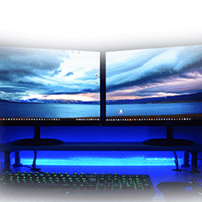

The Experience
We aim to provide all of our customers with an excellent experience at
Orion
Computers. Regardless of the need or wants of the customer,
we fulfill it to the best of our ability! This service changes the playing field! Led by a specialised team of
computer mechanics, we perform a internal and
external system refresh while still retaining your looks and data, but with better performance!
Service
To provide our customers with a better understanding of this service, we
have
provided a step by step guide on the process
Step 1: You will have to walk in at our Office (Address is located in the Contacts page) with your Desktop or
Laptop.
Step 2: Our representative will allocate you the next available timeslot for your Desktop / Laptop. If you
decide
to go forth with the service, the process for
the internal and external cleaning will take about 1-2 business days from the allocated timeslot given to you.
Step 3: An SMS will be sent to you to verify that your device is ready for collection. Drop by our office to
make
payment and pick it up!

Aftersales Support
An agent will contact you soon to follow up with the performance of your
desktop
and the overall experience. Should you have any concerns or issues
regrading our staff, feel free to contact the senior management at snrmanagement@orionpc.sg